Pfadwerk
Draußen sein. Aufschreiben. Nicht vergessen.
Eine App. Ein Projekt. Eine kleine Liebesgeschichte mit der Natur. · Björn alias Mo, Vater von mitrilmo · 2026
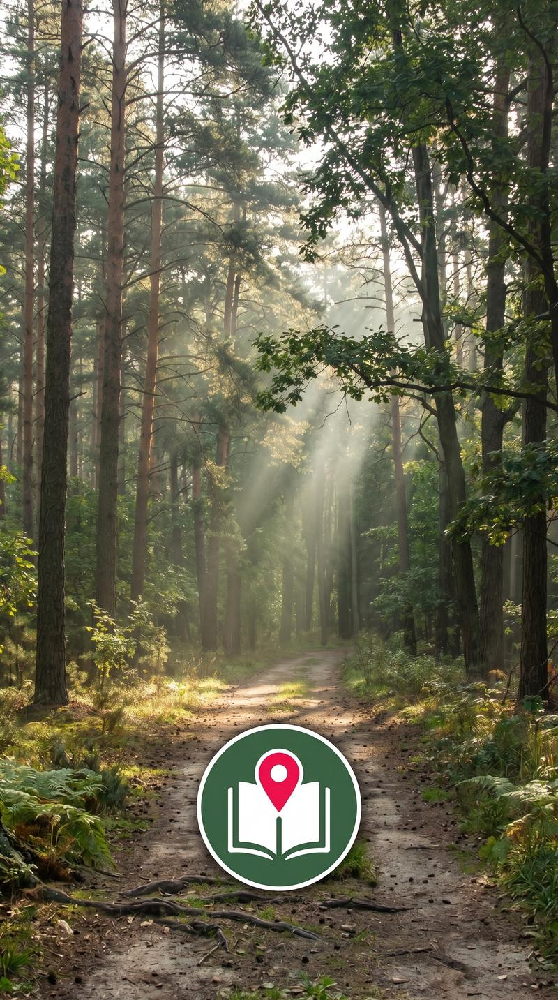
Inhalt
01 Der Grundgedanke
Es beginnt, wie so viele gute Ideen, mit einem kleinen Ärgernis: Man kommt von einer wunderschönen Wanderung zurück, möchte kurz festhalten, wo man war, wie das Wetter war, welche Ausrüstung gefehlt hat — und stellt fest, dass die vorhandenen Apps entweder zu viel wollen (Strava zählt Kalorien, als ob das je jemanden interessiert), zu wenig können (Notizen-Apps kennen keine Touren) oder einfach nicht so funktionieren, wie man selbst denkt.
Pfadwerk ist die Antwort darauf. Eine App, die genau das macht, was ein Wandertagebuch machen würde — nur eben digital, immer dabei und ohne dass man am nächsten Morgen die eigene Handschrift entziffern muss.
Der Name ist Programm: "Pfad" für die Wege, die man geht. "Werk" für das Handwerk des Dokumentierens. Und vielleicht auch ein kleines Nicken in Richtung jener norddeutschen Tradition, Dinge nach dem zu benennen, was sie tun — sachlich, ehrlich, kein Schnickschnack.
Was Pfadwerk kann — und was es bewusst nicht kann
Pfadwerk ist kein Fitness-Tracker. Es interessiert sich nicht dafür, wie viele Kalorien man beim Aufstieg verbrannt hat. Es gibt keine sozialen Feeds, keine Ranglisten. Stattdessen:
- Touren dokumentieren — Wanderungen und Spaziergänge
- GPS-Spur aufzeichnen, ohne dass der Akku sofort kapituliert
- Unterwegs Logbuch-Einträge schreiben, Fotos schießen, Koordinaten speichern
- Wetter festhalten — weil man das in drei Jahren vergessen hat
- Ausrüstung und Gelände notieren
- Berichte generieren — kurz, lang, für Social Media oder als Blog-Artikel
- Touren exportieren: GPX, HTML, TXT, PDF
Und das alles funktioniert komplett offline, ohne Cloud-Konto, ohne monatliche Gebühren.
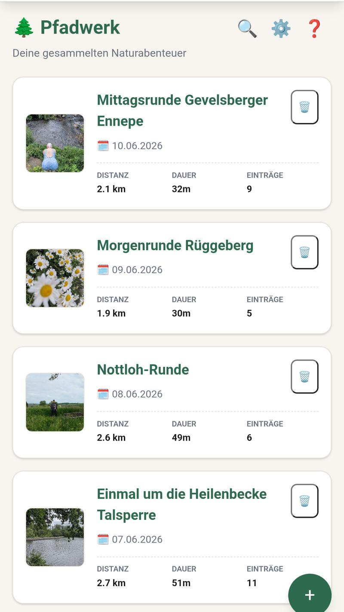
Abb. 1: Der Startbildschirm.
02 Wie es entstand — Eine ehrliche Geschichte
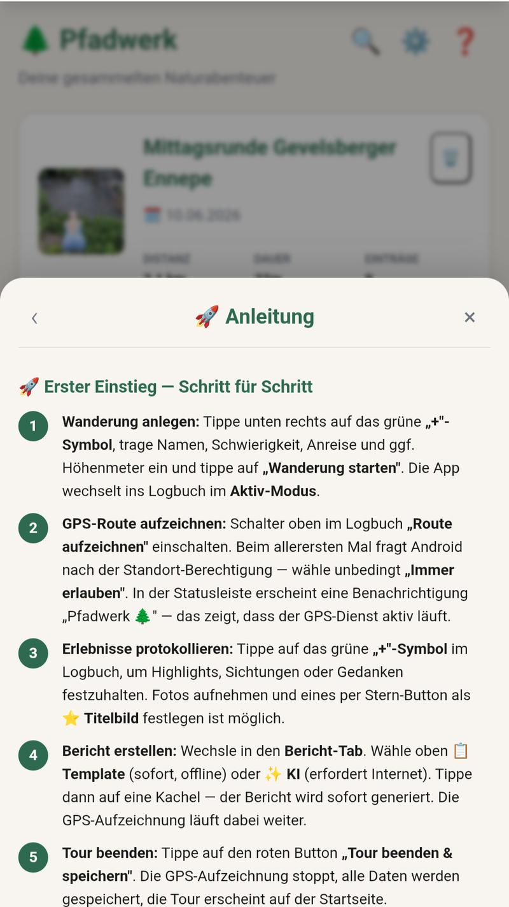
Abb. 2: Pfadwerks vier Hauptbereiche.
Pfadwerk ist ein Ein-Personen-Projekt, entstanden in Zusammenarbeit mit einer KI. Das klingt zunächst weniger romantisch als "ich habe das in einer Garage alleine gebaut" — ist aber die ehrlichste Beschreibung dessen, was hier passiert ist.
Die App wurde in mehreren Entwicklungs-Blöcken aufgebaut und anschließend in mehreren Feldtests auf echten Wanderungen erprobt. Die dabei gefundenen Fehler wurden akribisch protokolliert und behoben — was erklärt, warum die App in Version 4.9.53 angekommen ist, bevor sie überhaupt im Store erschienen ist.
Die Entwicklungs-Blöcke
Die App entstand in klar strukturierten Phasen:
- Block A: Grundgerüst — Touren anlegen, Logbuch, Datenspeicherung
- Block B: Erweiterte Funktionen — GPS, Wetter, Fotos, Berichte, Exporte
- Block C: Premium-Features und Code-System
- Block D: Play Store Compliance und Veröffentlichungsvorbereitung
- Block E+: Feldtest-Fixes — das, was man erst merkt, wenn man wirklich draußen ist
Pfadwerk wurde in mehreren Runden ausgiebig im echten Einsatz getestet. Jede Runde brachte neue Erkenntnisse — und neue Commits.
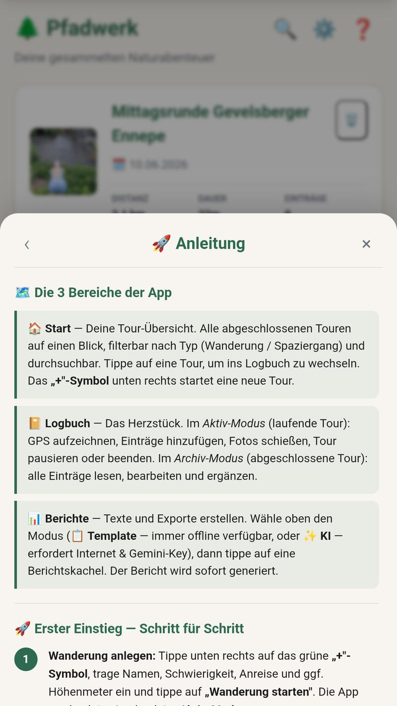
Abb. 3: Die untere Navigationsleiste.
Datenspeicherung — Lokal und sicher
Die Touren und alle zugehörigen Daten werden in einer lokalen Datenbank direkt auf dem Gerät gespeichert. Man braucht kein Nutzerkonto, keine Cloud, kein Internet. Die Daten gehören ausschließlich dem Nutzer — und bleiben auf dem Gerät.
03 Technische Architektur — Für Neugierige
Wer jetzt Schaubilder mit Microservices und Event-Driven-Architecture erwartet: Tut uns leid. Pfadwerk ist stolz auf seine Schlichtheit.
Eine Web-App im nativen Gewand
Pfadwerk ist technisch gesehen eine Web-Applikation: HTML, CSS, JavaScript. Was sie zur echten Android-App macht, ist Capacitor — ein Werkzeug, das die Web-App in eine native Android-Hülle verpackt. Man bekommt damit Zugriff auf echte Smartphone-Funktionen: GPS, Kamera, Dateisystem, Benachrichtigungen.
Das Ergebnis: Eine App, die sich nativ anfühlt, schnell ist und keinen Server braucht. Alles läuft lokal auf dem Gerät.
Tech-Stack
04 Die Funktionen im Detail
4.1 Eine Tour anlegen
Am Anfang jeder Tour steht ein Tippen auf den „+"-Knopf. Ab da fragt Pfadwerk nur das Nötigste: Name, Datum, Tourentyp (Wanderung oder Spaziergang). Alles andere lässt sich unterwegs ergänzen — oder auch gar nicht.
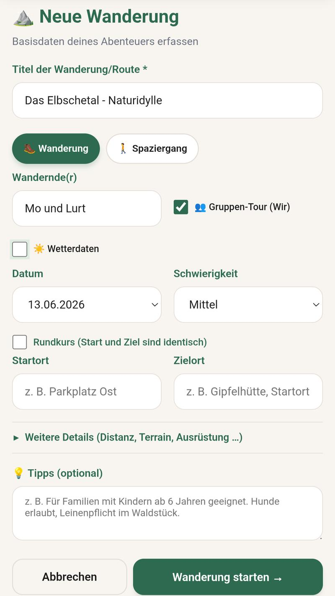
Abb. 4: Das Tour-Formular.
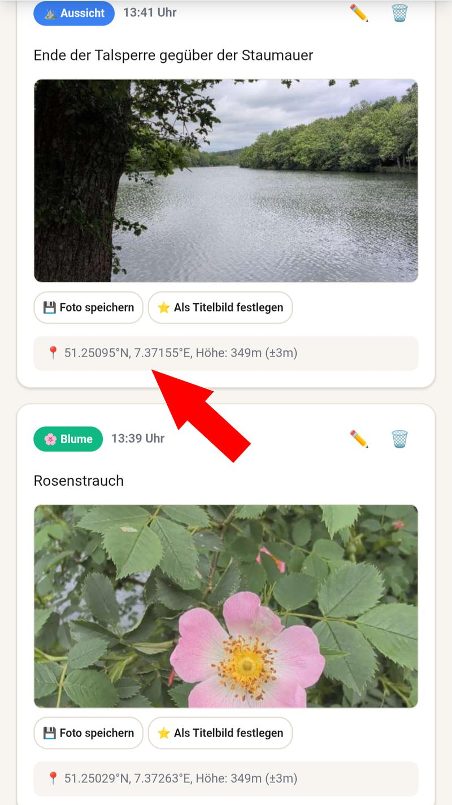
Abb. 5: Logbuch mit GPS-Koordinaten.
4.2 GPS-Aufzeichnung
Pfadwerk zeichnet die Route als GPS-Spur auf. Die App läuft dabei im Hintergrund weiter — man muss das Telefon nicht dauerhaft aufgesperrt halten. Die GPS-Spur lässt sich später als GPX-Datei exportieren und in anderen Tools öffnen.
4.3 Logbuch-Einträge
Das Herzstück von Pfadwerk ist das Logbuch. Unterwegs lassen sich Einträge in drei Kategorien schreiben: Highlights, Sichtungen und Aussichten. Jeder Eintrag bekommt automatisch die aktuelle GPS-Position und die Uhrzeit mitgegeben.
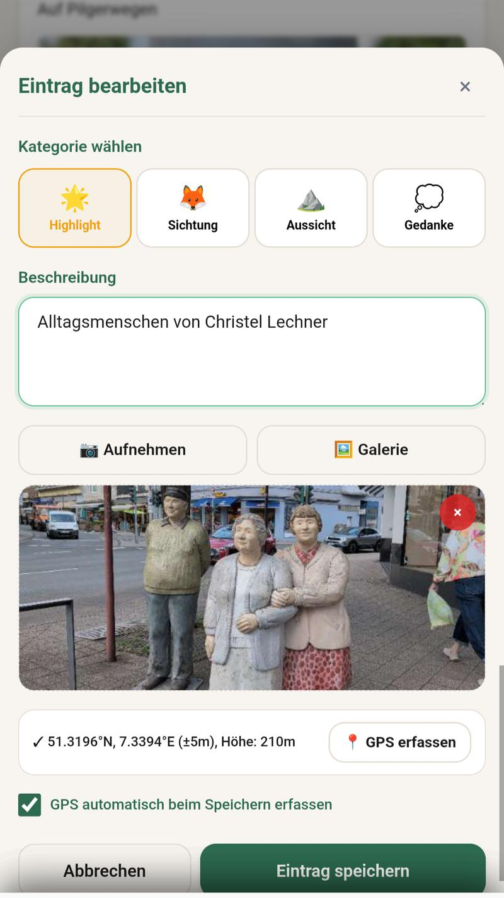
Abb. 6: Logbuch-Eintrag mit Kamera und Kategorie.
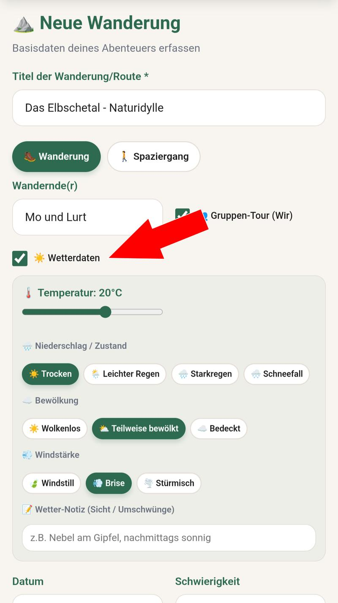
Abb. 7: Wetterdaten.
4.4 Wetter
Das Wetter ist das große Thema jeder Outdoor-Aktivität — ob man will oder nicht. Pfadwerk lässt einen das Wetter schnell erfassen: Temperatur, Bedingungen (Sonnig, Bewölkt, Regen, etc.), Wind. Einfach antippen, fertig.
4.5 Ausrüstung und Gelände
Was hatte man dabei? Was fehlte? Pfadwerk bietet Chip-Auswahlen für häufige Ausrüstungsgegenstände und Geländetypen. Schnelle Mehrfachauswahl per Tipp — kein Tippen erforderlich.
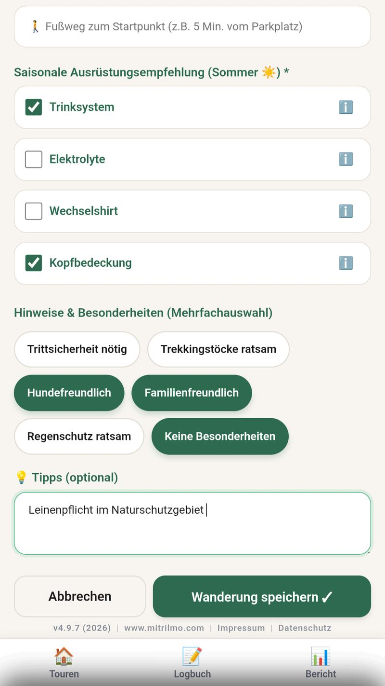
Abb. 8: Chip-Auswahl für Ausrüstung und Terrain.
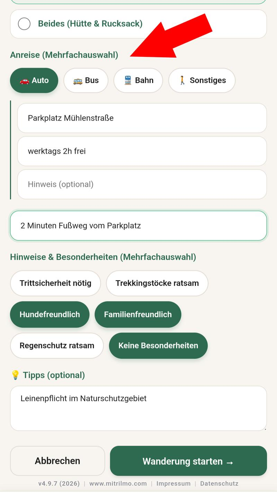
Abb. 9: Anreise (Auto / Bus / Bahn).
4.6 Anreise und Verpflegung
Wie ist man hingekommen? Auto, Bus, Bahn, oder zu Fuß gestartet? Pfadwerk dokumentiert die Anreise — inklusive nützlicher Details wie Parkplatz, Öffnungszeiten und Kosten. Auch die Verpflegung unterwegs lässt sich festhalten.
4.7 Fotos
Fotos lassen sich direkt aus der App heraus schießen oder aus der Galerie importieren. Optional fügt Pfadwerk ein dezentes Wasserzeichen mit Tour-Name, Datum und Koordinaten hinzu — so weiß man später noch, wo das Bild entstanden ist.
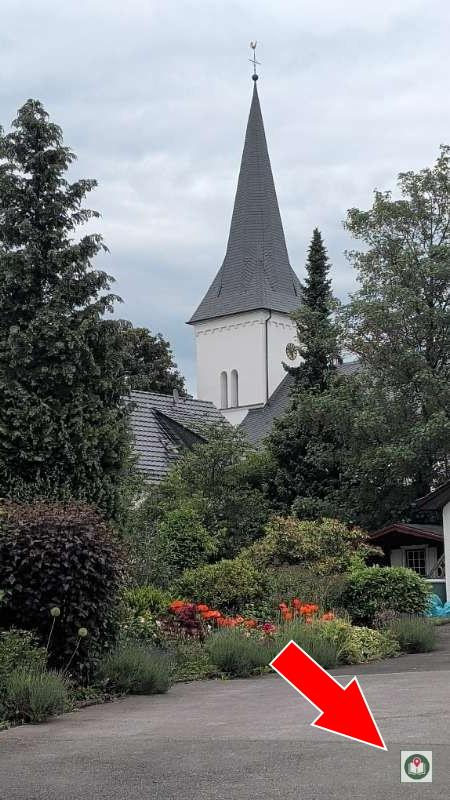
Abb. 10: Optionales Pfadwerk-Wasserzeichen auf Fotos.
05 Berichte und Exporte
Am Ende einer Tour, wenn man wieder zuhause ist und die Wanderschuhe in der Ecke stehen, fängt der zweite Teil von Pfadwerk an: die Dokumentation.
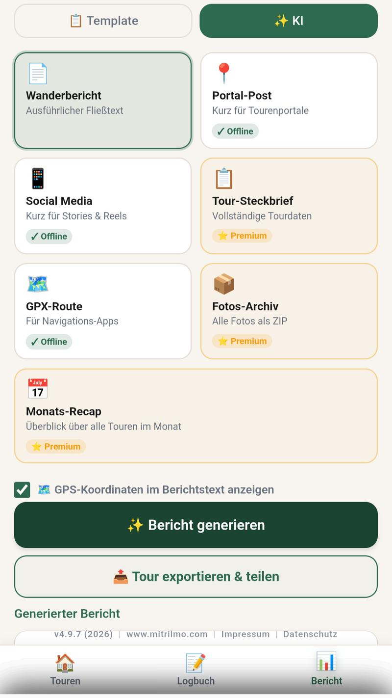
Abb. 11: Berichte Tab (Template / KI).
5.1 Automatisch generierte Berichte
Pfadwerk erstellt aus den erfassten Daten automatisch Berichte in drei Varianten:
- Langer Bericht: Vollständige Dokumentation aller Daten
- Kurzer Bericht: Kompakter Überblick, ideal zum Teilen
- Social-Media-Post: Fertig formuliert für Instagram & Co.
5.2 Exporte
- HTML-Export: Vollständiger Blog-Beitrag als HTML-Datei — mit Fotos, GPS-Daten und formatiertem Text
- GPX-Export: GPS-Spur im Standardformat für Navi-Apps und Komoot
- TXT-Export: Alle Daten als einfache Textdatei
- PDF-Export: Fertig formatierter Bericht zum Ausdrucken oder Weitergeben
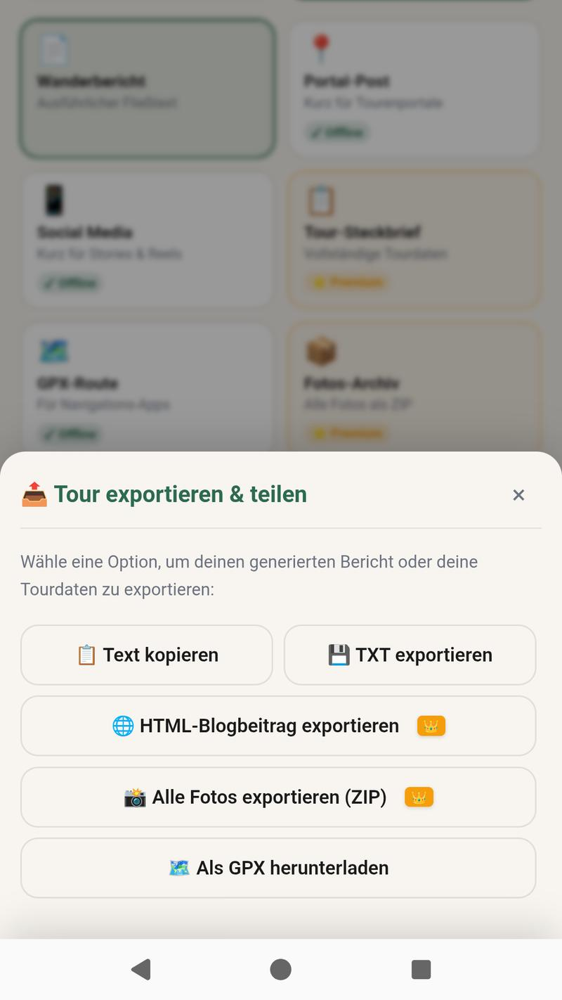
Abb. 12: GPX-, HTML- und TXT-Export.
07 Komfort-Funktionen
7.1 Easy-Modus
Für alle, die eine etwas größere Schrift bevorzugen: Pfadwerk bietet einen Easy-Modus, der alle Texte und Schaltflächen vergrößert — ohne das Layout zu zerstören.
7.2 Tipps & Tricks
Eine eingebaute Hilfe-Sektion erklärt die wichtigsten Funktionen mit kurzen, praxisnahen Tipps. Direkt in der App, ohne externe Links.
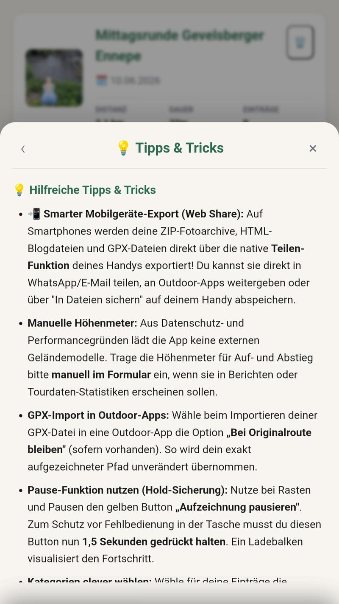
Abb. 15: Tipps & Tricks in der App.
08 Ausblick
Seit dem 22.07.2026 ist Pfadwerk im Google Play Store zu finden. Die App ist fertig — sie tut, was sie soll, stabil, zuverlässig, ohne böse Überraschungen. Was bis dahin an formalen Schritten nötig war — Compliance-Anforderungen von Google, Datenschutz-Nachweise, Release-Builds — ist erledigt.
Pfadwerk ist aktuell eine reine Android-App und läuft nicht auf iOS-Geräten (iPhone/iPad). Eine iOS-Version ist derzeit nicht geplant.
Parallel dazu reifen bereits weitere Ideen in der "Werk"-Familie. Vielleicht wird Pfadwerk dereinst Gesellschaft bekommen. Oder auch nicht. Manchmal ist ein gut gemachtes Ding für sich genug.
Aktueller Stand
Alle Screenshots auf dieser Seite sind Beispiele aus dem Versionsverlauf und können sich in aktuellen Versionen leicht anders darstellen.
„Der schönste Weg ist der, der einen zurückkommen lässt."
Pfadwerk merkt sich den Weg.